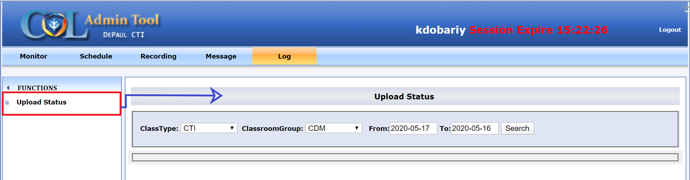
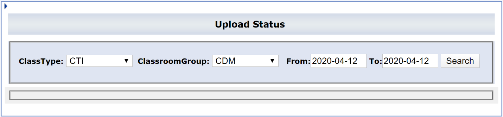
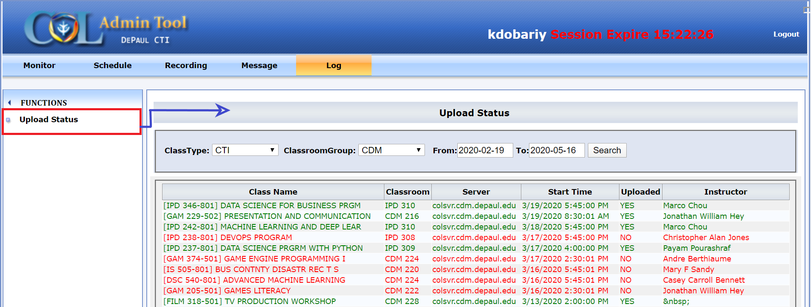

✺ Displays all the past recorded lectures upload status with some other information (i.e.).
✺ Each of the uploaded recordings can be searched here by using various filters.
► Class Type: by Class Type. TEST, SEMINAR or CTI
► Classroom Group: Search by RA classroom group. Default value ALL.
► From: Search recording starting from this date.
► To: Search recording until this date.
► Upload Status Search Result: Displays past lecture with upload status with some information.
► Status Color Coding: upload status of each recording is indicated by its color coding.


► Class Name: Gives the class name with class ID.
► Classroom: Classroom information where it was recorded (Building and Room).
► Server: Displays server location where lecture was uploaded.
► Start Time: Provides with the start-time of the lecture with Date.
► Uploaded: Displays the upload status.
► Instructor: Displays Instructor Name of the particular class.